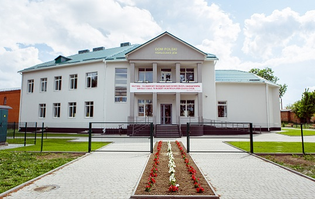

Chóralny śpiew w kolebce konfederatów barskich
W dniach 16-18 września w Domu Polskim w Barze po raz ósmy zorganizowano zajęcia dla chórów i dyrygentów polskich zespołów artystycznych.
W warsztatach wzięły udział chóry z Kijowa, Buczy, Białej Cerkwi, Humania, Odessy, Tarnopola, Równego, Koziatyna, Czortkowa, Winnicy, Drohobycza oraz Chmielnickiego.
Zajęcia rozpoczęły się w sobotę 17 od zapoznania się uczestników, których podzielono na dwie grupy. Członkowie chórów pod opieką Natalii Kuźmienko (wokal) oraz Ludmiły Chałabudy (dyrygowanie chóralne) przystąpili do doskonalenia swoich umiejętności. W trakcie zajęć uczyli się nowych utworów z repertuaru dla dzieci i młodzieży oraz religijnego.
Nauka śpiewu odbywała się w oparciu o znajomość fizjologii strun głosowych i wiedzy o zasadach higieny głosu. Dyrygowanie ćwiczono na podstawie 15 utworów z repertuaru barskich zespołów Młode Liście oraz Cantica Anima. Pierwszy dzień zajęć zakończył się występem chórów działających przy Rejonowym Kulturalno-Oświatowym Stowarzyszeniu Polaków im. Konfederatów Barskich.
Dzień drugi poświęcono na konsultacje i przygotowanie do zaśpiewania trzech utworów muzyki sakralnej: „Tak bowiem Bóg”, „Bogurodzica” oraz „Modlitwa o pokój”. Zostały wykonane wspólnie z chórem parafialnym w kościele św. św. Anny i Mikołaja przy akompaniamencie organisty Józefa Bilskiego. Wspólnie zaśpiewano także „Pod Twą obronę”.
Uczestnicy zajęć w Barze wracali do swych domów wzbogaceni o przyjemne wspomnienia i nabytą wiedzę. Wszyscy otrzymali partytury nauczonych utworów oraz certyfikaty potwierdzające udział w warsztatach. Bo pieśń, jak mówią, to rozmowa z Niebem.